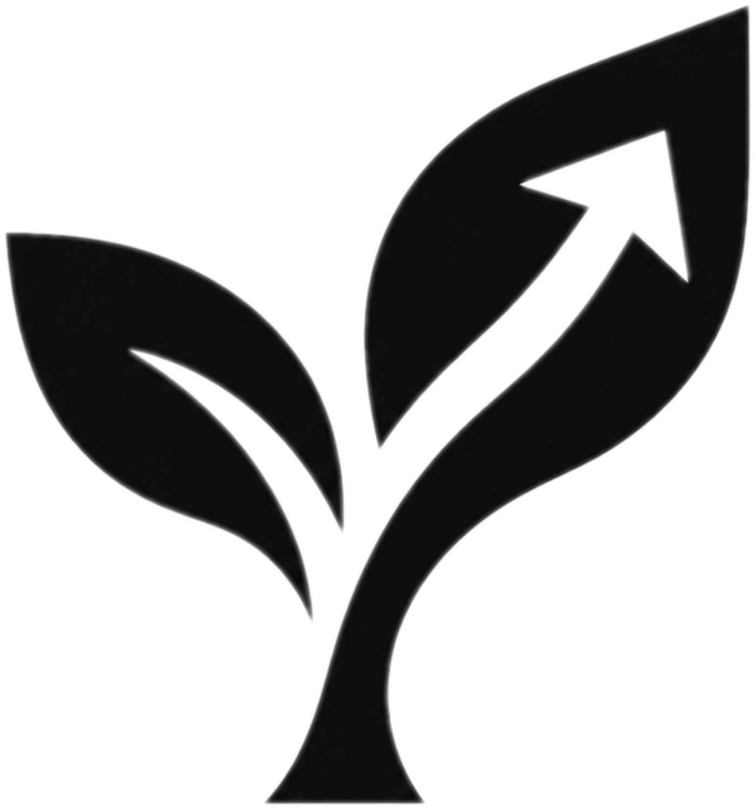

D-Day 예측 & 생육 진단
현재 위치의 날씨를 확인하여 맞춤형 식물 관리 팁을 준비 중입니다.
사진을 업로드하면 현재 생육 단계와남은 D-Day를 분석해 드립니다.
Kidney Bean
Lettuce
하트 모양의 떡잎만 존재하는 새싹 시기입니다. 흙 표면이 마르지 않도록 부드럽게 분무해주세요.
식물 진단 서비스를 이용하려면아래 버튼을 눌러 홈 화면에 앱을 설치해 주세요.